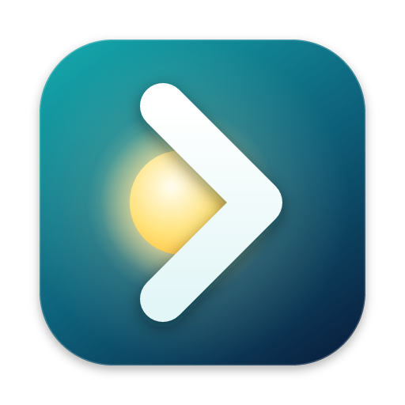
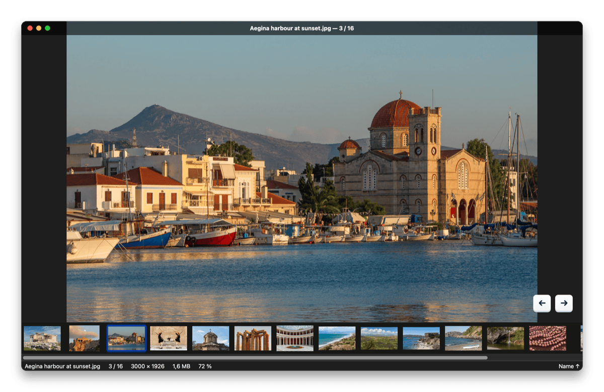
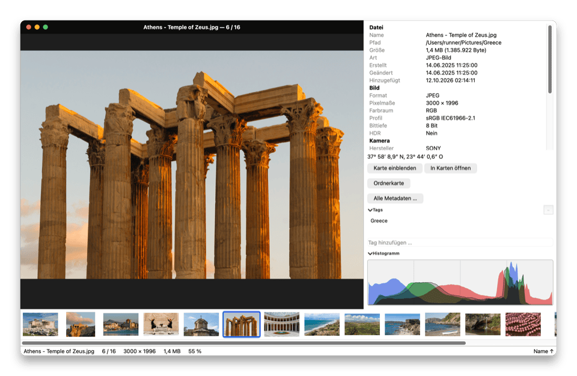
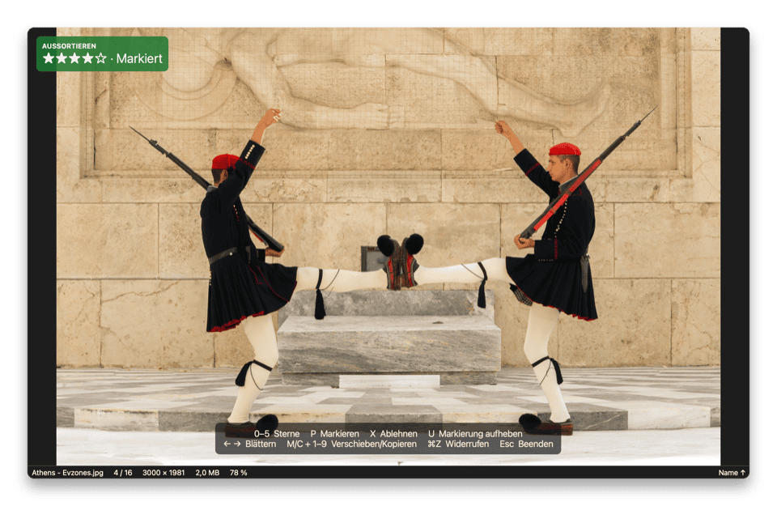
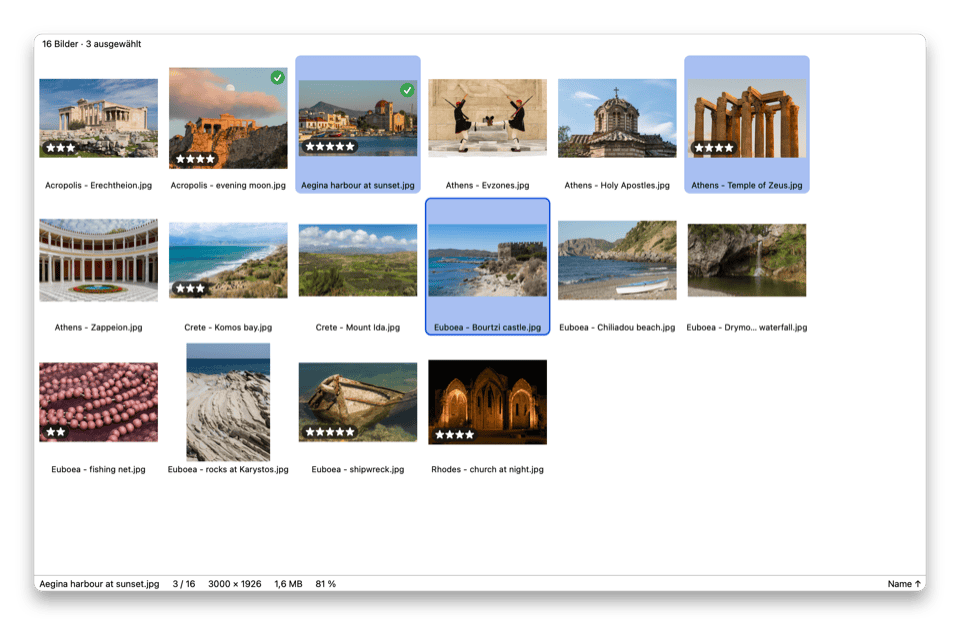
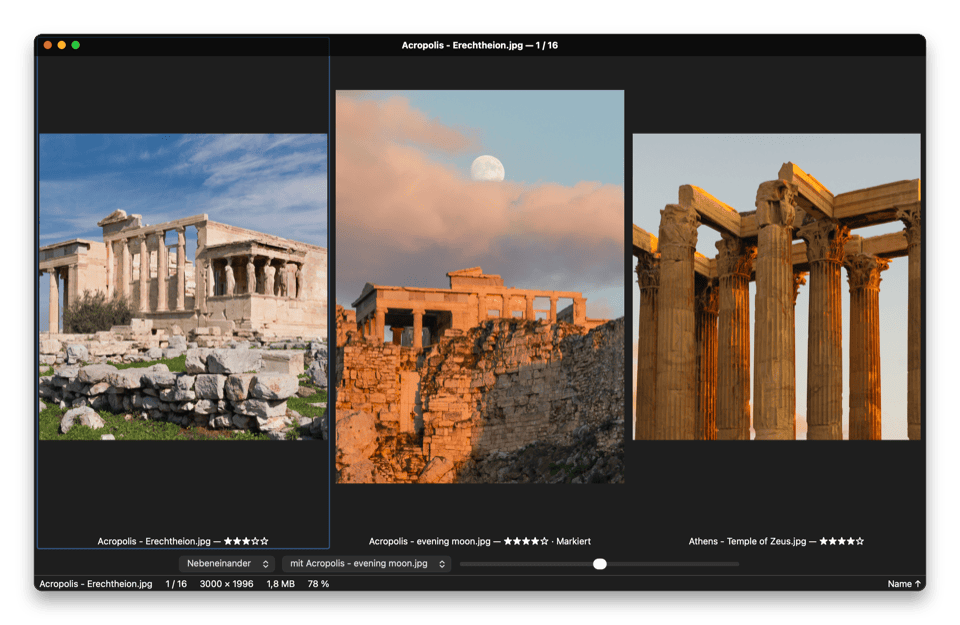
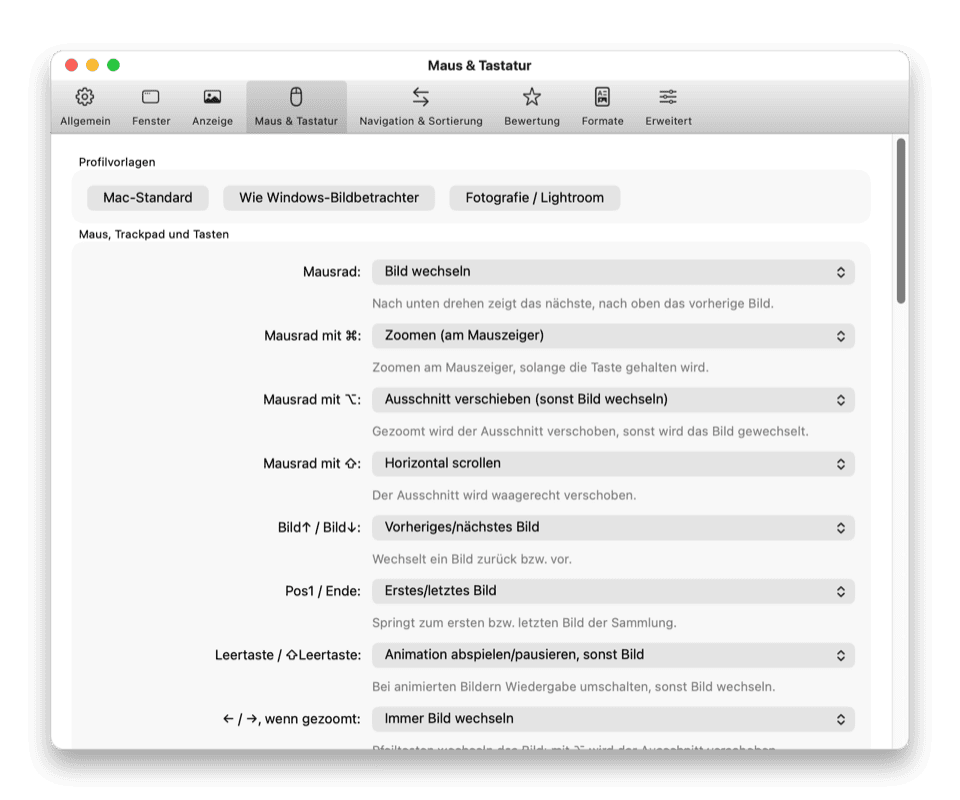
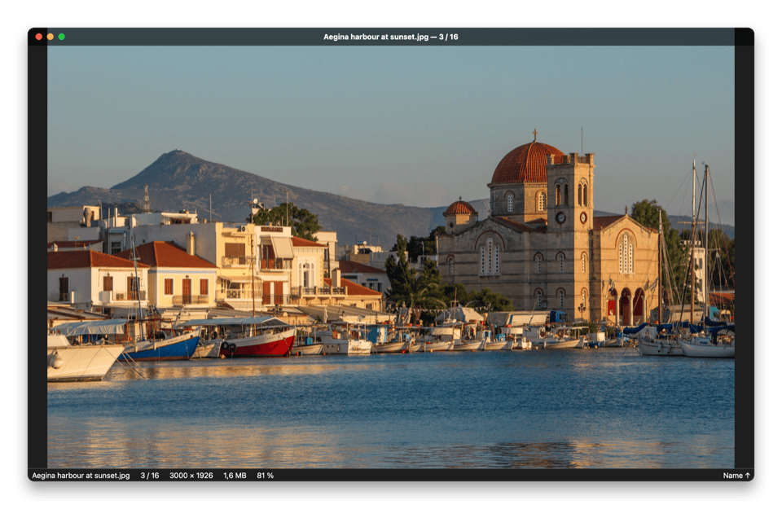

Lumaflip
Doppelklick auf ein Foto. Durch den ganzen Ordner blättern.
Der schnelle, freie Bildbetrachter, der dem Mac fehlt. Lumaflip öffnet das Bild sofort, lädt alle anderen Bilder des Ordners in der Reihenfolge, in der der Finder sie zeigt, und hält das nächste schon bereit, bevor → gedrückt wird.

Randloses Fenster: Die Titelleiste blendet sich ein, sobald sich die Maus bewegt, und verschwindet wieder, wenn das Foto im Mittelpunkt steht.
Warum noch ein Bildbetrachter?
In Vorschau öffnet ein Doppelklick auf ein Foto nur genau dieses Foto. Mit den Pfeiltasten geht es nicht zum nächsten Bild des Ordners, außer man hat vorher im Finder alle Dateien ausgewählt. Lumaflip behebt genau das und ergänzt, was Fotografen, Designer und Comic-Leser auf dem Mac vermissen.
| Vorschau | Lumaflip | |
|---|---|---|
| Doppelklick auf ein Foto, dann durch den ganzen Ordner blättern | – | ✓ |
| Dieselbe Reihenfolge wie im Finder-Fenster (Name, Hinzugefügt am, Größe, Symbolpositionen …) | – | ✓ |
| Nächstes Bild ist schon geladen, wenn → gedrückt wird | – | ✓ |
| GIMP, Krita, OpenRaster, PSB, QOI, SVG, Comics (CBZ / CBR / CB7) | – | ✓ |
| Sternebewertungen, Markiert / Abgelehnt, Lightroom-kompatibles XMP | – | ✓ |
| Raster, Vergleich von 2–4 Bildern, Lupe, Focus Peaking, Über-/Unterbelichtungswarnung | – | ✓ |
| Jede Taste, jeder Klick und jede Geste lässt sich neu belegen | – | ✓ |
| Quelloffen | – | ✓ |
Vorschau ist großartig für PDFs und schnelle Bearbeitungen; Lumaflip ist dafür gebaut, viele Bilder schnell anzusehen.
Gemacht für viele Fotos
Alles passiert im Hintergrund: Ordner werden geladen, Nachbarbilder dekodiert und Miniaturen erscheinen, während das aktuelle Foto auf dem Bildschirm bleibt.
Sofort da
Das erste Bild erscheint in deutlich unter einer halben Sekunde. Nachbarbilder werden vorab dekodiert, sodass sich das Blättern durch 24-Megapixel-Fotos wie Umblättern anfühlt. RAW-Dateien zeigen zuerst ihre eingebettete Vorschau.
Finder-Reihenfolge, live
Lumaflip liest die Finder-Darstellungsoptionen des Ordners: Sortierspalte, Richtung, sogar Symbolpositionen. Neue, gelöschte und umbenannte Dateien erscheinen schon beim Blättern. Mit ⌥→ geht es zum nächsten Ordner.
Echtes HDR
HDR-Fotos vom iPhone, Ultra-HDR-JPEG, HDR-AVIF und OpenEXR leuchten mit echter Spitzlicht-Helligkeit auf XDR- und anderen EDR-Displays, mit SDR-Vorschau und Belichtungsregler.
Aussortieren, das andere Apps verstehen
Bewerten mit 0–5, markieren mit P, ablehnen mit X. Bewertungen landen in XMP-Zusatzdateien, die Lightroom, Capture One und darktable lesen, in der Datei selbst oder in Finder-Tags. Alle abgelehnten Bilder in einem Schritt in den Papierkorb legen.
Schärfe und Belichtung prüfen
L gedrückt halten für eine 100-%-Lupe, den Zoom über eine Serie hinweg fixieren, bis zu vier Bilder nebeneinander oder als Differenz vergleichen und Focus Peaking, Über-/Unterbelichtungswarnung und die Fokuspunkte der Kamera einblenden.
Merkt sich den Zoom
In ein Detail zoomen, weiterblättern, zurückkommen: Das Bild ist noch genau dort vergrößert, wo es verlassen wurde. Mit der Eingabetaste geht es zurück zu „Einpassen“.
Comics und PDFs
Ein CBZ-, CBR- oder CB7-Archiv oder ein PDF öffnen und wie einen Ordner durchblättern, mit einem Rechts-nach-links-Modus für Manga. Nichts wird dauerhaft auf die Festplatte entpackt.
Ordnerkarte
Alle Fotos des Ordners mit Aufnahmeort auf einer Karte. Das aktuelle Foto ist hervorgehoben und wandert beim Blättern mit. Kartendaten werden erst geladen, wenn man sie ausdrücklich anfordert.
Leichte Bearbeitung, verlustfrei
JPEGs ohne Neukodierung drehen und zuschneiden, als JPEG, HEIC, AVIF, PNG oder TIFF exportieren – mit oder ohne Aufnahmeort –, umbenennen und eigene Shell-Befehle oder Kurzbefehle per Taste ausführen.
Eigene Tasten, eigene Maus
Jedes Tastenkürzel, jedes Scrollen und jeder Klick ist einstellbar, mit Konflikterkennung und Vorlagen für Mac-Nutzer, Umsteiger von Windows und Lightroom-Fotografen.
Privat und abgeschottet
Keine Telemetrie, kein Konto, keine Cloud. Ungewöhnliche Formate werden in einem abgeschotteten Hilfsprozess ohne Netzwerk- und Schreibzugriff dekodiert, sodass eine defekte Datei die App nicht zum Absturz bringen kann.
Mehrsprachig
18 Sprachen, darunter Deutsch, Français, Español, Italiano, 日本語, 简体中文 und 한국어. Folgt der Systemsprache oder wechselt jederzeit ohne Neustart.
So sieht es aus
Echte Bildschirmfotos der App, automatisch aus der aktuellen Version erzeugt. Zum Vergrößern anklicken.












Öffnet fast alles
Eingebaut, ohne Nachinstallation. Animationen werden abgespielt, mehrseitige Dateien lassen sich durchblättern, Farbprofile und Display P3 werden berücksichtigt.
Für die Tastatur gebaut
Eine Handvoll Tasten genügt. ? in der App zeigt alle weiteren.
Installation
- Das DMG von der Release-Seite laden.
- Lumaflip in den Ordner Programme ziehen und starten. Releases sind von Apple signiert und notarisiert und aktualisieren sich selbst (lässt sich abschalten).
- Optional: Ablage → Als Standard-App festlegen … wählen, damit ein Doppelklick im Finder Lumaflip öffnet. Für welche Dateitypen, lässt sich selbst bestimmen.
Voraussetzung: macOS 15 Sequoia oder neuer auf Apple Silicon. Ein Homebrew-Cask ist geplant. Lieber selbst bauen? Die README erklärt, wie es geht (auf Englisch).
Windows (Vorschau)
Windows 10 und 11, x64: Installer oder portable ZIP-Datei. Nutzt die Windows-eigenen Codecs für HEIC, AVIF, WebP, JPEG XL und RAW. Details
Linux (Vorschau)
Ein AppImage für x86_64 (Ubuntu 24.04 oder neuer) mit eingebautem AVIF, JPEG XL, RAW und OpenEXR; HEIC mit dem HEVC-Codec der eigenen Distribution. Details